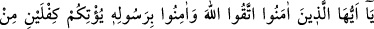
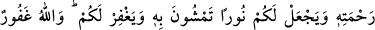
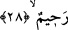

28. Ey îmân edenler! Allah’tan korkun ve Peygamberine inanın ki, O size
rahmetinden iki kat versin ve ışığında yürüyeceğiniz bir nûr lutfetsin; sizi
bağışlasın. Allah, çok bağışlayan, çok esirgeyendir.
“Ey îman edenler! Allah’tan korkun ve Peygamberine inanın ki” Yâni, ey geçmiş
peygamberlere îman edenler! Size yasakladığı şeylerden dolayı Allah’tan korkun ve
O’nun elçisi olan Muhammed (a.s.)’e îmân edin. Burada resûl kelimesinin başka bir
kayıt olmadan mutlak olarak zikredilmiş olması, bu kelimeyle Peygamberimizin
risâletine alem olduğunu bildirmek içindir. Dolayısıyle başka bir peygamber akla
gelmemelidir.
“O, size rahmetinden iki kat versin” İnanın ki, Allah size rahmetinden iki nasib ve iki
mükâfât versin.
Râğıb’dan nakl edildiğine göre, âyette geçen kifl kelimesi hakkında kefâlet bulunan
pay demektir. Sanki Cenâb-ı Hak, o payın verileceğine dâir kefil olmuştur. İki paydan
maksad, Allah Teâlâ’nın: “Onlardan bir kısmı da ‘Ey Rabbimiz! Bize dünyada da
iyilik ver, âhirette de iyilik ver’...” (el-Bakara 2/201) âyet-i kerîmesinde özendirdiği
paylardır. “rahmetinden” Yâni “kendi merhametinden” verir. Allah’ın rahmetinden
verilen bu iki pay, Hz. Muhammed’e (s.a.) ve ondan önceki peygamberlere îmân
ettiğinizden dolayıdır. Ancak Hz. Muhammed (s.a.) gönderildikten sonraki şerîatlerine
değil, İslâm şerîati ile nesh edilmeden önceki şerîatlerinin gerçek durumlarına
inandıkları için bu paylar verilir.
Ebû Mûsâ’dan (r.a.) rivâyet edildiğine göre, Peygamberimiz (s.a.) şöyle buyurduğunu
söylemiştir: “Üç kişiye mükâfâtları iki kat verilecektir: Sâhib olduğu câriyesini
güzelce öğretip eğiterek terbiye eden ve sonra âzâd aderek onunla evlenen adam. İşte
bu kimse için iki mükâfât vardır. Ve kitab ehli bir mü’min iken sonra Peygamber Hz.
Muhammed’e (a.s.) îmân eden kimseye de iki mükâfât vardır. Ve Allah’ın hakkını îfâ
eden, efendisine iyi davranarak hakkını veren köleye de iki mükâfât vardır.”[283] Âzâd
edildiklerinde bazı kölelerin ağlaması bundandır. Çünkü iyi davranma mükâfâtı
kendisinden, onu âzâd eden efendisine geçmiş, kendisine yalnız Allah’ın hakkını îfâ
etmenin mükâfâtı kalmıştır.
Gönlünde esir olma isteği varken bir temiz aşka
Dayanmak isteme sakın saltanatın tahtına
Şeyh Sâdî şöyle demiştir: